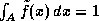

News
News
| Getting Started | Documentation | Glish | Learn More | Programming | Contact Us |
|
| VERSIONID |
News
|
magic value blanking
major cycle
map
mapping
mask
Maximum Entropy Method
mean solar day
Measure
measures
MeasurementSet
Megabyte
member function
meridian
MERLIN
message
method
minor cycle
MIPS
MIRIAD storage manager
modem
module
monochrome
mosaic
Mosaic
movie
MPEG
The process of marking an invalid value by placing a special value (typically an IEEE NaN) into it. Unlike a Mask, magic value blanking is irreversible.
In the Clark CLEAN algorithm for deconvolution, a number of minor cycles, or inner iterations, followed by the computation (by the FFT algorithm) of the full residual image, comprise a major cycle.
In radio astronomy, a colloquial term for an image, one or more of whose pixel axes represents a spatial co-ordinate.
1. In radio astronomy, an obsolescent term for "imaging" or "image making".
2. In computer graphics, the transformation from one co-ordinate system into another. For example, the transformation from the model co-ordinates used to describe an object by its developer into pixel co-ordinates for a raster display.
A collection of Boolean values which are used to mark whether a value is valid or invalid. Can be used to implement blanking.
(MEM): A regularization method
for the numerical solution of ill-posed problems, given noisy data. In the
MEM, the regularizing (or smoothing) term, which measures the roughness
of the computed approximate solution  , is given by the negative of the Shannon entropy of ,
-H():
, is given by the negative of the Shannon entropy of ,
-H():
, has been normalized so
that
 (and 0log0 = 0). , has been normalized so
that
, has been normalized so
that The underlying philosophy of the method, espoused in Jaynes' method of prior estimation, [E.T.Jaynes,
Prior probabilities, IEEE Trans. Syst. Sci. Cyb., SSC-4
(1968) 227-241]) and by J. P. Burg at a 1967 meeting of the Society of
Exploration Geophysicists, is that one is being "maximally noncommittal"
in regard to the insufficiency of the data if one maximizes the entropy,
and thus minimizes the information content, of
, subject to the constraint that should agree with the data.
For one-dimensional discrete convolution equations, with noiseless, regularly-spaced data, there exists a closed-form solution. For other cases, iterative methods are used, as with other forms of the regularization method.
Use of the method in radio astronomy was encouraged by J.G.Ables in 1972 in public lectures. It is now commonplace in radio interferometric imaging [e.g. S.F.Gull and G.J.Daniell, Image reconstruction from incomplete and noisy data, Nature, 272 (1978) 686-690; T.J.Cornwell and K.F.Evans, A simple maximum entropy deconvolution algorithm, Astron. Astrophys. 143 (1985), 77-83].
Non-negativity of the computed solution is a natural by-product of the MEM. Polarization parameters used in astronomy (e.g. Stokes' Q, U and V), unlike the total intensity, may take negative values, however. J.E.B.Ponsonby [An entropy measure for partially polarized radiation, Mon. Not. R. Astr. Soc., 163 (1973) 369-380] has derived an appropriate generalization of the method for use when reconstructing polarized brightness distributions.
See also variational method.
The mean length of time between successive meridian crossings of the Sun, i.e. the mean period between successive apparent noons.
In AIPS++, a class identifying the value(s), errors(s), and unit(s) for a measurement with transformation properties determined by the ReferenceFrame and Representation. Epoch, duration, direction, and position are examples of different types of Measures.
The tool for accessing the C++ Measures library. This tool allows manipulation of measured quantities possessing units, coordinates, reference frames.
In AIPS++, all of the data produced by a Telescope which the user cares to keep, including both astronomical data, instrumental data, and monitor data, is the body of the MeasurementSet. A MeasurementSet is derived from a Table, and presents a big table view of data. In interferometry, each row contains a single Visibility of u-v data.
In object-oriented programming, a function that belongs to a class and is able to manipulate class data. Only member functions are allowed to directly manipulate class data. This is the mechanism by which encapsulation is enforced. The set of public member functions of a class make up its interface.
The great circle passing through the observer's zenith and through the north and south points on the observer's horizon.
Multi-Element Radio Linked Interferometer Network, an aperture synthesis array of seven radio-linked antennas in the U.K., operated by the Nuffield Radio Astronomy Laboratories (Jodrell Bank). For details, consult ftp://jbss0.jb.man.ac.uk/pub/merlin/
1. The atomic unit of information exchanged between two communicating processes.
2. In object-oriented programming, sending a message to an object (to invoke a method) is equivalent to calling a procedure in traditional programming languages, except that the actual code executed may be selected only at run-time depending on the class of the object.
The name given in object-oriented languages to a procedure or routine associated with one or more classes. The code tells an object of a certain class how to perform actions, e.g. printing itself or creating a new instance of itself, rather than the function (e.g. "print") being coded to handle different types of object.
Different classes may define methods with the same name (i.e. methods may be polymorphic). The term method is used both for a named operation, e.g. "print" and also for the code which a specific class provides to perform that operation. A synonym for member function.
In the Clark CLEAN deconvolution algorithm, an inner iteration, in which the peak residual over a subregion (the CLEAN window) of the full residual image is found and is used to obtain the next successive iterate. Compare major cycle.
Millions of instructions per second.
A storage manager which stores values only when they change. This storage manager is appropriate for Table columns which vary slowly, which is important for the big table view of data. The form used in AIPS++ is based on ideas in the MIRIAD (Multichannel Image Reconstruction, Image Analysis and Display) software system written by R.Sault.
(modulator/demodulator): a device that allows digital communication over analog telephone lines. When sending data, a modem modulates digital information onto a continuous carrier frequency on the telephone line. When receiving, it demodulates (digitizes) information from the carrier. Also see baud.
a group of closely related classes or tools.
Literally "one color". Used in computing to characterize a video display unit that uses only black and one contrasting color (white/green/amber), as distinct from a color monitor. Each pixel on a monochrome display corresponds to a single bit in video memory, and is therefore either "on" or "off".
The term is sometimes also applied to a gray scale display using more than one bit per pixel but no hue.
In radio astronomical interferometry, a term used to describe an image whose
extent >> /D radians,
where D is the diameter of the individual antennas,
and which is therefore constructed from visibility data obtained using several different
pointings of these antennas. In other words, a composite image
that extends well beyond the FWHM of the primary beam of the individual antennas.
A procedure for making mosaics using the Maximum Entropy Method is described by
Tim Cornwell in Mosaicing [Synthesis Imaging in Radio Astronomy, eds.
R.A.Perley, F.R.Schwab and A.H.Bridle, A.S.P. Conference Series, 6 (1989), 277-285.]
/D radians,
where D is the diameter of the individual antennas,
and which is therefore constructed from visibility data obtained using several different
pointings of these antennas. In other words, a composite image
that extends well beyond the FWHM of the primary beam of the individual antennas.
A procedure for making mosaics using the Maximum Entropy Method is described by
Tim Cornwell in Mosaicing [Synthesis Imaging in Radio Astronomy, eds.
R.A.Perley, F.R.Schwab and A.H.Bridle, A.S.P. Conference Series, 6 (1989), 277-285.]
A browser (client) for the World-Wide-Web developed at the NCSA. Mosaic was the first tool to offer a graphical user interface to the Internet's distributed information services. Version 1.0, released in April 1993, was originally designed and programmed for the X Window System. Mosaic is now available for a variety of computing platforms, as described at http://www.ncsa.uiuc.edu/SDG/Software/Mosaic/Docs/help-about.html
In 1994, Marc Andreessen, who prototyped Mosaic while an undergraduate at the University of Illinois, started Netscape Communications Corporation with several others from the NCSA Mosaic development team.
In radio astronomical image processing, a contiguous series of video displays shown in rapid succession to visualize a data cube as a sequence of images ordered along one axis of the cube.
Moving Pictures Experts Group: An ISO committee that generates standards for digital video compression and audio. Also the name of their compression algorithm. MPEG-1 is optimized for CD-ROM. Variants under development (in late 1994) are MPEG-2 for broadcast quality video and MPEG-4 for low bandwidth video telephony.
You could now go back to the:
Copyright © 1996,1999,2000 Associated Universities Inc., Washington, D.C.
abridle@nrao.edu, 19 July 1996, 14:27 EDT
 or 1,048,576
or 1,048,576